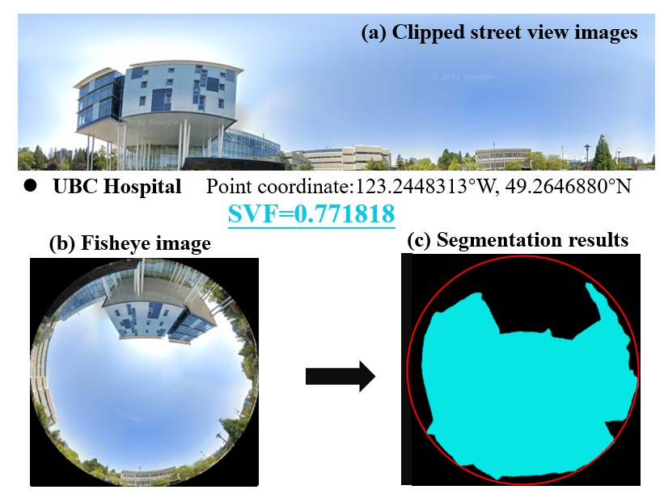

<html>

<head>

  <title>Metro Vancouver</title>
  <meta charset="utf-8" />
  <meta name="viewport" content="width=device-width, initial-scale=1.0">

  <!-- Source for your Leaflet JavaScript and CSS -->
  <link rel="stylesheet" href="https://unpkg.com/leaflet@1.9.4/dist/leaflet.css"
    integrity="sha256-p4NxAoJBhIIN+hmNHrzRCf9tD/miZyoHS5obTRR9BMY=" crossorigin="" />
  <!-- Make sure you put this AFTER Leaflet's CSS -->
  <script src="https://unpkg.com/leaflet@1.9.4/dist/leaflet.js"
    integrity="sha256-20nQCchB9co0qIjJZRGuk2/Z9VM+kNiyxNV1lvTlZBo=" crossorigin=""></script>

  <!--Add scripts that link to data sources here-->


</head>

<body>
  <!-- Your map's HTML container -->
  <div id="mapid" style="height: 100%;"></div>

  <!-- Data layers, their interactivity, and styling are contained within <script> </script> elements -->
  <script>

    // Initialize your map
    var mymap = L.map('mapid').setView([49.216, -123.236], 14);

    //Load the tile layer
    
    
    

    
    var OSM = L.tileLayer('https://{s}.tile.openstreetmap.org/{z}/{x}/{y}.png',{
      minZoom: 0,
      maxZoom: 19,
      attribution: '&copy; OpenStreetMap contributors'
    }).addTo(mymap);

    //PointA
    var hospitalPopup = "<br>Point A: SVF at UBC Hospital";

    // specify popup options 
    var hospitalOptions =
    {
      'maxWidth': '400',
      'className': 'custom'
    }

    L.marker([49.26468805383916, -123.24483129],).bindPopup(hospitalPopup, hospitalOptions).addTo(mymap);
    
    //PointB
    var StudentnestPopup = "<br>Point B: SVF at Student Nest";

    // specify popup options 
    var StudentnestOptions =
    {
      'maxWidth': '400',
      'className': 'custom'
    }

    L.marker([49.2659078, -123.2492446],).bindPopup(StudentnestPopup, StudentnestOptions).addTo(mymap);

    // Add point layer here
    
    
    
    // Add polygon layer here


  </script>


</body>

</html>
